3.4.4. メソッドのGUI設定項目
各メソッドの詳細設定項目について説明します。なお、これらの設定は「プロファイルの詳細」に挙げた各メソッドの設定項目に該当します。
DrawString
PDFファイルの指定されたページに、任意の文字列を描画します。
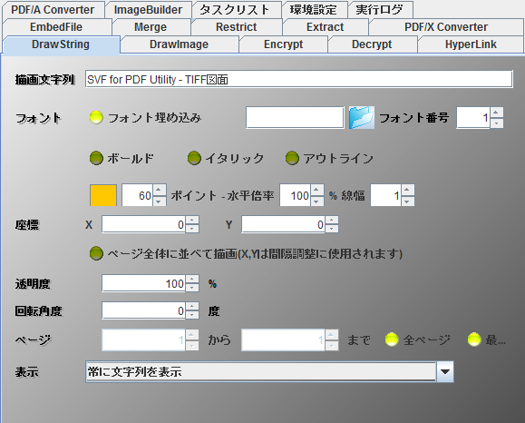
項目 | 説明 |
|---|---|
描画文字列 | PDFファイルに描画する文字列を入力します。 |
フォント |
|
ボールド、イタリック、アウトライン | 描画文字列の文字修飾を指定します。 クリックするたびに、設定が有効、無効と切り替わります。 |
カラーボックス | 描画文字列の表示色を指定します。 カラーボックスをクリックすると、［テキスト色の選択］ダイアログが表示されます。［テキスト色の選択］ダイアログから任意の色を選択し、［OK］ボタンをクリックすると色が指定されます。 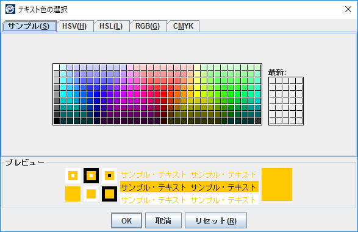 |
ポイント | 描画文字列の文字サイズをポイント単位で指定します。 |
水平倍率 | フォントサイズに対する水平幅を百分率で指定します。100のときは正方グリフです。 |
線幅 | アウトラインの線幅を指定します。 |
座標 | ［X］に水平方向の文字描画起点を、［Y］に垂直方向の文字描画起点を指定します。 |
ページ全体に並べて描画 | 文字列をタイル状に並べて表示します。 ［ページ全体に並べて描画］を選択した場合は、［座標］の［X］、［Y］で上下左右の間隔を指定します。 Xは横方向の間隔、Yは縦方向の間隔です。負の値を指定した場合は狭く、正の値を指定した場合は広くなります。 ページ左下隅から文字列が並びます。 |
透明度 | 透明度を、0～100の範囲の整数で設定します。「0」は完全に透明（非表示）、「100」は完全に不透明です。［最背面］を選択していない場合は、描画文字列が重なる箇所が透明度に応じて透けて見えます。 |
回転角度 | 描画文字列の回転角度を、0～360の範囲の整数で設定します。0と360は回転しません。 回転は、文字列描画開始位置を中心に反時計回り方向です。 |
ページ | 文字列を描画するページ範囲を指定します。 「全ページ」が選択されている場合は、すべてのページに描画されます。 ページ範囲を指定したい場合は、「全ページ」の選択を外し、開始ページ番号と終了ページ番号を指定します。 |
最背面 | 描画文字列を最背面に設定するかどうかを指定します。選択されている場合は、最背面に描画されます。 |
表示 | 描画文字列のPDF閲覧時と印刷時での表示状態をコントロールします。［常に文字列を表示］、［モニター画面に表示し、プリンターに印刷しない］、［プリンターに印刷し、モニター画面に表示しない］から選択します。 |
DrawImage
PDFファイルの指定されたページにイメージを貼り込みます。
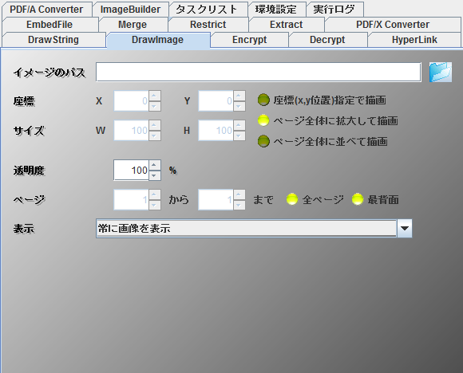
項目 | 説明 |
|---|---|
イメージのパス | 貼り込むイメージファイルのローカルパスを指定します。使用できるイメージファイルの形式は、BMP、JPEG、GIF、PNGのいずれかです。 一般的ではない形式のイメージファイルは利用できない場合があります。 |
座標(x,y位置)指定で描画 | イメージを1つだけ表示します。［座標(x,y位置)指定で描画］を選択した場合は、［座標］の［X］、［Y］でイメージの表示座標を指定します。 |
ページ全体に拡大して描画 | イメージをページ全体に拡大して表示します。 |
ページ全体に並べて描画 | イメージをタイル状に並べて表示します。［ページ全体に並べて描画］を選択した場合は、［サイズ］の［H］、［W］で1つのタイルのイメージサイズも指定します。 ページ左下隅からイメージが並びます。 |
座標 | ［ページ全体に並べて描画］が無効の場合に、イメージの貼り込み開始位置を指定します。［X］に水平方向の貼り込み開始起点を、［Y］に垂直方向の貼り込み開始起点を指定します。 |
サイズ | ［ページ全体に拡大して描画］が無効の場合に、イメージの表示サイズを指定します。［H］に水平方向の表示サイズを、［W］に垂直方向の表示サイズを指定します。 |
透明度 | 透明度を、0～100の範囲の整数で設定します。「0」は完全に透明（非表示）、「100」は完全に不透明です。［最背面］を選択していない場合は、描画文字列が重なる箇所が透明度に応じて透けて見えます。 |
ページ | イメージを貼り込むページ範囲を指定します。 ［全ページ］が選択されている場合は、すべてのページに貼り込みます。 ページ範囲を指定したい場合は、［全ページ］の選択を外し、開始ページ番号と終了ページ番号を指定します。 |
最背面 | イメージを最背面に配置するかどうかを指定します。選択されている場合は最背面に貼り込みます。 |
表示 | 描画文字列のPDF閲覧時と、印刷時での表示状態をコントロールします。［常に文字列を表示］、［モニター画面に表示し、プリンターに印刷しない］、［プリンターに印刷し、モニター画面に表示しない］から選択します。 |
注意
［ページ全体に並べて描画］を選択した場合は、［座標］は無効です。
Encrypt
PDFファイルを暗号化します。ユーザーパスワードが設定されているPDFを開く際に、パスワードの入力が要求されるようになります。
このメソッドは、そのほかのすべてのメソッド処理が終了した後に一度だけ実行してください。
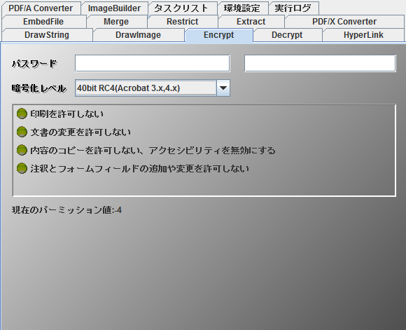
項目 | 説明 |
|---|---|
パスワード | 最初の欄にオーナーパスワードを指定します。また、次の欄にユーザーパスワードを指定します。 |
暗号化レベル | 暗号化レベルを選択します。選択するとユーザー権限の詳細設定項目が表示されるので、必要に応じて設定します。 |
Decrypt
暗号化PDFを復号化します。
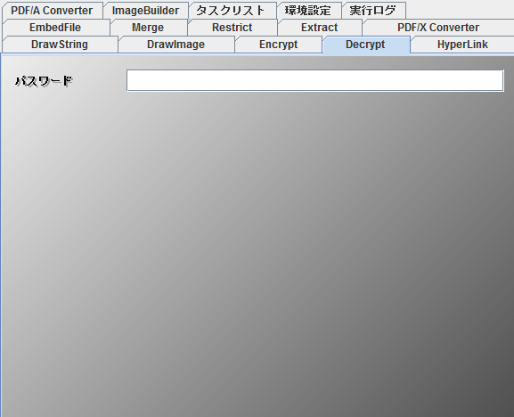
項目 | 説明 |
|---|---|
パスワード | 復号化パスワードを指定します。オーナー権限を持つパスワードを指定してください。 |
HyperLink
PDFファイルの指定されたページにリンクを設定します。
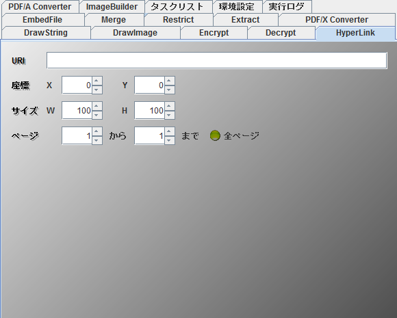
項目 | 説明 |
|---|---|
URI | リンク先となるURI（URLを含みます）を指定します。URIとして設定できる文字列は、W3Cの仕様に準拠します。 |
座標 | ［X］にリンク領域となる起点を、［Y］に垂直方向のリンク領域となる起点を指定します。 |
サイズ | ［H］に水平方向のリンク領域となるサイズを、［W］に垂直方向のリンク領域となるサイズを指定します。 |
ページ | リンクを設定するページ範囲を指定します。 ［全ページ］が選択されている場合は、すべてのページに設定されます。 ページ範囲を指定したい場合は、［全ページ］の選択を外し、開始ページ番号と終了ページ番号を指定します。 |
EmbedFile
PDFファイルにファイルを埋め込みます。
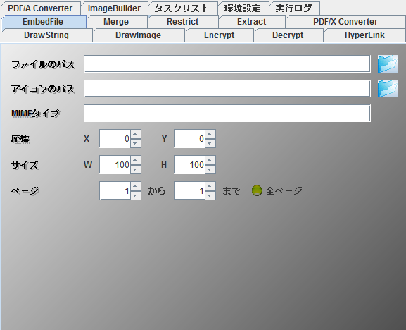
項目 | 説明 |
|---|---|
ファイルのパス | 埋め込むファイルのパスを指定します。 パスはローカルパスで指定してください。 |
アイコンのパス | アイコンファイルのパスを指定します。 パスはローカルパスで指定してください。 使用できるイメージファイルの形式は、BMP、JPEG、GIF、PNGのいずれかです。 一般的ではない形式のイメージファイルは利用できない場合があります。 |
MIMEタイプ | 埋め込むファイルのMIMEタイプを指定します。 MIMEタイプの記述方法は、W3Cの仕様に準拠します。 |
座標 | ［X］に水平方向のアイコン配置起点を、［Y］に垂直方向のアイコン配置起点を指定します。 |
サイズ | ［H］に水平方向のアイコンサイズを、［W］に垂直方向のアイコンサイズを指定します。 |
ページ | アイコンを描画するページ範囲を指定します。 ［全ページ］が選択されている場合は、すべてのページに描画されます。 ページ範囲を指定したい場合は、［全ページ］の選択を外し、開始ページ番号と終了ページ番号を指定します。 |
Merge
PDFファイルをマージします。
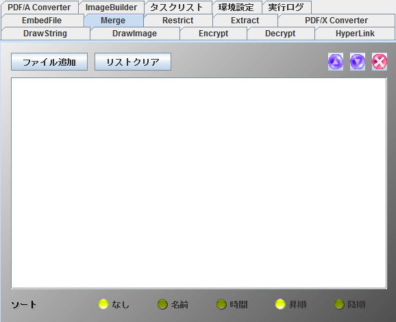
項目 | 説明 |
|---|---|
［ファイル追加］ボタン | マージするPDFファイルを指定します。 ［ファイル追加］ボタンをクリックすると、［ファイル追加］ダイアログが表示されます。 ［ファイル追加］ダイアログから、マージ対象となるファイルを選択し［ファイル追加］ボタンをクリックすると、リストに追加されます。 同様の手順でマージするPDFファイルをすべてリストに登録しておきます。 |
［リストクリア］ボタン | リストへのマージ対象PDFファイルの登録をすべて解除します。 |
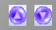 | リストでPDFファイルを選択した状態でボタンをクリックすると、上または下のファイルに選択状態となる対象が移動します。 |
［選択アイテムを削除］ボタン | リストで選択状態となっているPDFファイルの登録を解除します。 |
Restrict
PDFファイルにさまざまな閲覧制限を設定します。
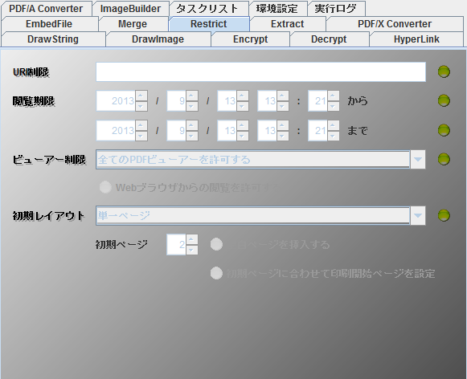
項目 | 説明 |
|---|---|
URI制限 | 制限したいURIを指定します。 W3CのJavaScript仕様URI文字列にエンコード済みである必要があります。 |
閲覧期限 | 西暦で「YYYYMMDDhhmm」形式の12桁の数値で閲覧できる期間を指定します。 |
ビューアー制限 | 閲覧を許容するビューアーの種類を指定します。 |
Webブラウザからの閲覧を許可する | Webブラウザーによる閲覧を許可するかどうか指定します。 |
初期レイアウト | ビューアー表示する際の、表示レイアウトの種類の初期値を指定します。 |
初期ページ | ビューアー起動後、最初に表示するページを指定します。 |
空白ページを挿入する | 文書の先頭に白紙ページを挿入するかどうか指定します。 |
初期ページに合わせて印刷開始ページを設定 | 初期ページに合わせて印刷開始ページを設定するかどうかを指定します。 |
Extract
PDFファイルからページを抽出します。
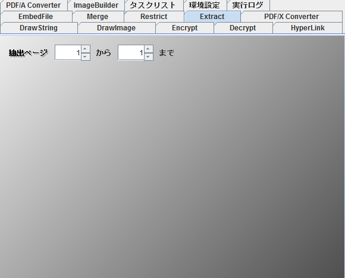
項目 | 説明 |
|---|---|
抽出ページ | 抽出するページ範囲を指定します。 |
PDF/X Converter
PDFファイルをPDF/X形式に変換します。PDF内のカラー表現において、RGB色をPDF/Xに準拠したCMYK色およびPDF/X固有のドキュメント情報に変換します。
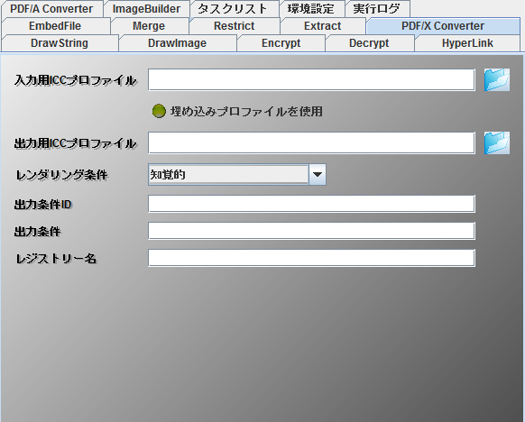
項目 | 説明 |
|---|---|
入力用ICCプロファイル | 入力イメージが作成されたときに使用されたICCプロファイルを指定します。PDF内のRGBイメージのデフォルトカラースペースとして使われます。指定がなければsRGBで代用されます。［埋め込みプロファイルを使用］の指定により挙動が異なります。 指定するICCプロファイルは、ICC.1:1998-09の仕様に準拠している必要があります。 |
埋め込みプロファイルを使用 | PDF内のイメージデータをRGBよりCMYK変換する際、埋め込みICCプロファイルが見つかったときの挙動を指定します。
|
出力用ICCプロファイル | 出力用のCMYKのICCプロファイルを指定します。 入力必須項目のため、指定されていない場合はエラーとなり、処理を中止します。 指定されたICCプロファイルは、出力インテントを定義するためにも使われます。 |
レンダリング条件 | レンダリングインテントを指定します。 ［知覚的］、［相対的な色域を維持］から選択します。 参考「彩度」と「絶対的な色域を維持」はサポートしていません。 |
出力条件ID | 出力環境を示す文字列を指定します。レジストリ名と組み合わせて使用します。入力がない場合は、［出力用ICCプロファイル］に指定したICCプロファイルによって自動設定されます。 |
出力条件 | 必要に応じて、印刷の条件を入力します。入力がない場合は、［出力用ICCプロファイル］に指定したICCプロファイルによって自動設定されます。 |
レジストリー名 | 出力用ICCプロファイルに関する詳細を検索するためのURLを指定します。 |
注意
GUIを使用してPDF/X変換を行う場合は、トリミングサイズ、裁ち落としサイズ、仕上がりサイズ、アートサイズは入力できません。入力したい場合は、プロファイルを作成し、タスクリストにより実行してください。
PDF/A Converter
PDFファイルをPDF/A（PDF/A-1b）形式に変換します。
PDF/A Converterの設定項目はありません。
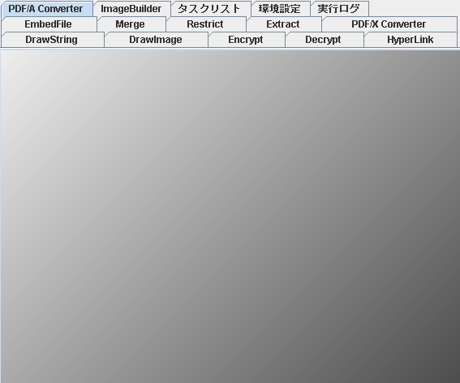
ImageBuilder
TIFFファイルをPDFファイルに変換します。
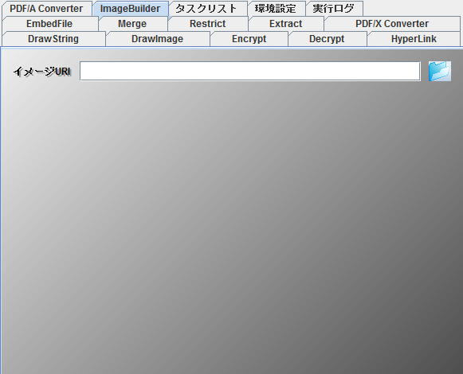
項目 | 説明 |
|---|---|
イメージURI | 変換元となるTIFFファイルのパスを指定します。 次のTIFFファイルをPDF変換できます。
|